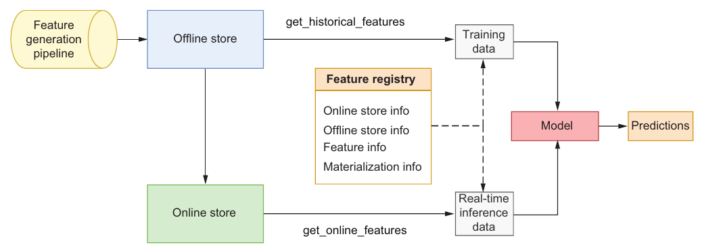

فصل ۴ · صص. ۹۷–۱۲۳
طراحی سیستمهای ML قابلاطمینان
Designing reliable ML systems
Machine Learning Platform Engineering, 1st Edition
بخش دوم کتاب با این پرسش شروع میشود که چطور آزمایشهای ML را قابلردیابی و تکرارپذیر کنیم (ص. ۹۵). این فصل دو مؤلفه از نقشهی ذهنی فصل ۱ را میسازد: experiment tracking و model registry با MLflow، و feature store با Feast (صص. ۹۷–۹۹). مثال یک classifier دودویی درآمد است، با برچسبهای <=50K و >50K (ص. ۹۸). با MLflow نمودارهای EDA، دادهها، پارامترها و متریکهای سه مدل ثبت میشوند، بهترین مدل با یک کوئری پیدا و در registry ثبت میشود (صص. ۱۰۰–۱۱۴). با Feast، featureها در سه فایل جدا با entity و FeatureView ثبت میشوند، برای آموزش با point-in-time join از offline store و برای inference از online store خوانده میشوند (صص. ۱۱۴–۱۲۳).
فهرست خود فصل (از فهرست مطالب کتاب)
- ۴.۱ ابزار MLflow برای experiment tracking — ص. ۹۸
- ۴.۱.۱ کاوش داده — ص. ۱۰۰
- ۴.۱.۲ ردیابی با MLflow — ص. ۱۰۲
- ۴.۱.۳ model registry در MLflow — ص. ۱۱۱
- ۴.۲ ابزار Feast بهعنوان feature store — ص. ۱۱۴
- ۴.۲.۱ ثبت featureها — ص. ۱۱۶
- ۴.۲.۲ بازیابی featureها — ص. ۱۱۸
- ۴.۲.۳ سرور feature — ص. ۱۲۱
- ۴.۲.۴ کار با UI در Feast — ص. ۱۲۲
از کتاب
مقدمه
کار مثل بیشتر data scientistها با شناخت داده شروع میشود: EDA، تقسیم داده و آزمودن چند مدل. MLflow آزمایشها را نگه میدارد و بهترین مدل را با وابستگیهایش در registry میگذارد؛ featureهای تازه هم در Feast ثبت میشوند چون در deploy لازماند (ص. ۹۸). روی شکل ۴.۱، این فصل روی سه حرف میایستد: feature store (D)، experiment tracking (C) و model registry (B) (ص. ۹۹). کد فصل در github.com/practical-mlops/chapter-4 است (ص. ۹۸).
| ابزار | مؤلفهی نقشه | پرسشی که جواب میدهد |
|---|---|---|
| MLflow tracking | C | کدام پارامترها بهترین نتیجه را دادند؟ |
| MLflow model registry | B | کدام نسخهی مدل در production است؟ |
| Feast | D | آیا آموزش و inference همان featureها را میبینند؟ |
پرسشهای ستون آخر از p. 100 و p. 114.
از کتاب
۴.۱ ابزار MLflow برای experiment tracking
چه باید ثبت شود؟ دادهی train و test، وزنهای مدل و متریکها (ص. ۹۸). commit کردن پارامترها در Git ممکن است ولی tag زدن منظم میخواهد، و فایل پارامتر کنار notebook توضیح اضافه میخواهد؛ tracking server مرکزی این دو را حل میکند و چند تیم روی آن آزمایشها را مقایسه و تکرار میکنند (ص. ۱۰۰). سه پرسشی که MLflow جواب میدهد: کدام نسخه در production است، کدام پارامترها بهترین نتیجه را دادند، و آیا نتیجهی شش ماه پیش تکرارپذیر است (ص. ۱۰۰).
۴.۱ ابزار MLflow برای experiment tracking
۴.۱.۱ کاوش داده
صص. ۱۰۰–۱۰۲داده حدود ۳۰٬۱۶۲ ردیف دارد، همه categorical: Workclass و Education و Marital-Status و Occupation و Relationship و Race و Sex و Native_country، و target دودویی (صص. ۱۰۰–۱۰۱). نمودار هر متغیر در برابر target ساخته و ذخیره میشود؛ مثلاً خوداشتغالها احتمال بیشتری دارند بالای ۵۰ هزار دلار درآمد داشته باشند (ص. ۱۰۲).
۴.۱ ابزار MLflow برای experiment tracking
۴.۱.۲ ردیابی با MLflow
صص. ۱۰۲–۱۱۱flowchart TB
E["experiment<br/>income-classifier"] --> R1["run: EDA<br/>artifact: نمودارها"]
E --> R2["run: decision tree<br/>داده، پارامتر، متریک، مدل"]
E --> R3["run: random forest"]
E --> R4["run: XGBoost با autolog"]
R2 -.->|"مسیر داده"| M[("MinIO<br/>bucket mlflow-datasets")]نمودار vault از pp. 103–108.
| مفهوم | معنا در کتاب |
|---|---|
| experiment | چیزی مثل پروژه؛ اینجا income-classifier (ص. ۱۰۳) |
| run | یک اجرای آزمایش با run ID یکتا؛ نام run با uuid4 ساخته میشود تا runهای EDA از مدلسازی جدا بمانند (ص. ۱۰۳) |
| artifact | فایل مدل، داده یا نمودار؛ با log_artifacts (ص. ۱۰۳) |
| dataset input | mlflow.data.from_pandas با مسیر بیرونی؛ MLflow نام و نوع ستونها و تعداد ردیف را نگه میدارد (ص. ۱۰۶) |
| متریک و پارامتر | log_metric و log_params، مثلاً accuracy و AUC (صص. ۱۰۶–۱۰۷) |
- همهی featureهای categorical با one-hot به dummy تبدیل میشوند و فهرست ستونها برای inference با pickle ذخیره میشود (ص. ۱۰۵).
- داده در MinIO همان cluster Kubeflow ذخیره میشود؛ هر object store دیگری مثل GCS یا S3 هم میشود (ص. ۱۰۶).
- سه مدل: decision tree، random forest و XGBoost (ص. ۱۰۶).
- قابلیت autolog با یک خط برای XGBoost مدل و نمودارها و پارامترها را ثبت میکند، حتی نمودار feature importance، ولی متریک سفارشی را نه (صص. ۱۰۸–۱۱۱).
در stack مرجع MLflow و JupyterHub هست؛ پرسش این است که هر run چه چیزی را واقعاً ثبت میکند.
?نوبت شما · data scientist شما مدل دستهبندی متن تراکنش را در notebook آموزش داده و متریکها و مدل در MLflow هست. شش ماه بعد کسی میپرسد مدل روی کدام برش داده آموزش دید. چه چیزی کم است؟دیدن پاسخ
داده. کتاب train و test را در object store میگذارد و مسیرشان را با mlflow.data.from_pandas و log_input ثبت میکند تا هر run به دادهی خودش برگردد (صص. ۱۰۶–۱۰۷). در stack مرجع یعنی ذخیرهی Parquet برش آموزش با تاریخ و ثبت مسیرش در run، و autolog تنها کافی نیست چون داده را آرایه ثبت میکند (ص. ۱۰۸).
۴.۱ ابزار MLflow برای experiment tracking
۴.۱.۳ model registry در MLflow
صص. ۱۱۱–۱۱۴بهترین مدل را با کوئری پیدا کنید: در UI عبارت metrics.roc_auc_score_test > 0.8 و نمای نمودار، یا با MlflowClient و search_runs مرتبشده بر AUC؛ بعد register_model با model URI همان run (صص. ۱۱۱–۱۱۳). در این مثال random forest برنده است (ص. ۱۱۱). مدل ثبتشده مثل کد از staging به production ارتقا پیدا میکند (ص. ۱۱۳).
- ابزار MLflow اکنون زبانهی Prompts هم دارد، ولی به گفتهی کتاب هنوز محدود است و فصلهای ۱۲ و ۱۳ سراغ Langfuse میروند (ص. ۱۱۳).
- نمونهی محلی همکاری نمیدهد؛ MLflow باید در محیط مشترک، مثل cluster Kubernetes، نصب شود (ص. ۱۱۴).
از کتاب
۴.۲ ابزار Feast بهعنوان feature store
در دنیای واقعی featureها از چند جدول میآیند. کتاب برای شبیهسازی، داده را به سه فایل با timestamp و user_id میشکند: featureهای demographic، relationship و occupation (ص. ۱۱۴).
نسخهی feature درست کدام است؟ کاربری که featureهایش در ۷ ژانویه، ۲۱ مه و ۴ دسامبر ثبت شده، برای ۲۲ مه باید مقدار ۲۱ مه را بگیرد (ص. ۱۱۵). این منطق را میشود با SQL نوشت، که یک چیز دیگر برای نگهداری است، یا به Feast سپرد که point-in-time correct میسازد (ص. ۱۱۵).


| offline store | online store | |
|---|---|---|
| در کتاب | فایل Parquet در MinIO | Redis |
| برای | آموزش و inference دستهای | inference بلادرنگ با latency کم |
| فراخوانی | get_historical_features | get_online_features |
| چه برمیگرداند | مقدار point-in-time برای هر ردیف entity | آخرین مقدار |
بر پایهی pp. 115–120.
یک location مشترک منطق تولید feature را از منطق مدل جدا میکند و featureها را بین تیمها قابل اشتراک میکند (ص. ۱۱۵).
۴.۲ ابزار Feast بهعنوان feature store
۴.۲.۱ ثبت featureها
صص. ۱۱۶–۱۱۸| مفهوم | تعریف | مثال کتاب |
|---|---|---|
| entity | شناسهای که feature برایش جمع میشود | user_id؛ برای محصول، product_id (ص. ۱۱۶) |
| file source | مسیر فایل در S3 یا MinIO، فقط Parquet | با override endpoint به MinIO (ص. ۱۱۶) |
| FeatureView | گروه منطقی featureها با entity و schema و TTL و منبع | demographic (ص. ۱۱۷) |
| TTL | حد نگاه به گذشته در ساخت دادهی تاریخی | کتاب ۳۶۵ روز میگذارد تا چیزی جا نیفتد (ص. ۱۱۷) |
feature_store.yaml | نام پروژه، محل registry، config دو store | registry در bucket feature-registry (صص. ۱۱۷–۱۱۸) |
فرمان feast apply تعریفها را در registry مینویسد و Redis را برای online store آماده میکند (ص. ۱۱۸).
۴.۲ ابزار Feast بهعنوان feature store
۴.۲.۲ بازیابی featureها
صص. ۱۱۸–۱۲۰- تابع
get_historical_featuresیک DataFrame entity با ستونهایuser_idوevent_timestampو فهرست featureها مثلdemographic:Sexمیگیرد (صص. ۱۱۸–۱۱۹). - فرمان
feast materializeبا زمان شروع و پایان، دادهی آن بازه را از offline به online میبرد (ص. ۱۲۰). - تابع
get_online_featuresفقط آخرین مقدار را برمیگرداند (ص. ۱۲۰).
در stack مرجع Silver نسخههای ردیفها را با update_date نگه میدارد؛ این همان مواد خام point-in-time است.
?نوبت شما · برای مدل پیشبینی نکول وام، تحلیلگری جدول آموزش را با join وامها روی آخرین وضعیت مشتری در Gold ساخته. AUC آفلاین عالی است و در production ضعیف. چه اتفاقی افتاده؟دیدن پاسخ
آخرین وضعیت مشتری شامل اطلاعاتی است که بعد از زمان درخواست وام پیدا شده؛ مدل از آینده یاد گرفته. feature درست، آخرین مقدار پیش از زمان رویداد است (ص. ۱۱۵). با Silver که تاریخچه را دارد میشود همان join را با شرط update_date <= event_time و یک حد TTL ساخت، یا به feature store سپرد (صص. ۱۱۵، ۱۱۷).
امتحان کنید
point-in-time join
باز کردن در صفحهی کامل ↗ · این شبیهسازی مدل خود vault از سازوکاری است که کتاب شرح میدهد.
۴.۲ ابزار Feast بهعنوان feature store
۴.۲.۳ سرور feature
صص. ۱۲۱–۱۲۲فرمان feast serve یک API میدهد برای برنامههایی که به زبانی نوشته شدهاند که SDK ندارد؛ با یک curl و فهرست featureها و user_id، مقدارها از online store برمیگردند (صص. ۱۲۱–۱۲۲).
۴.۲ ابزار Feast بهعنوان feature store
۴.۲.۴ کار با UI در Feast
صص. ۱۲۲–۱۲۳فرمان feast ui روی localhost:8888 featureها و entityها و منبع داده را نشان میدهد و با tag فیلتر میکند (صص. ۱۲۲–۱۲۳). جمعبندی کتاب: MLflow و Feast دو مؤلفهی مهماند ولی هنوز کار دستی، مثل retrain، میخواهند؛ فصل بعد با Kubeflow خودکارش میکند (ص. ۱۲۳).
مرور
بدهبستانها در یک نگاه
| انتخاب | چه میدهد | چه میگیرد |
|---|---|---|
| ثبت پارامترها در Git | بدون ابزار تازه | commit و tag منظم؛ مقایسهی سخت (ص. ۱۰۰) |
| MLflow tracking server | مقایسه و تکرار مشترک | یک سرویس دیگر که باید در cluster اجرا شود (ص. ۱۱۴) |
| ثبت دستی | کنترل کامل بر قالب، از جمله DataFrame | کد بیشتر (صص. ۱۰۶–۱۰۷) |
| autolog | یک خط، حتی feature importance | متریک سفارشی نه؛ داده بهصورت آرایه (ص. ۱۰۸) |
| join دستی با SQL | ابزار تازه نمیخواهد | یک چیز دیگر برای نگهداری و debug (ص. ۱۱۵) |
| Feast | point-in-time، اشتراک feature، online store | registry و materialization و Redis (صص. ۱۱۵–۱۲۰) |
| TTL کوتاه | featureهای تازه | ردیفهایی که مقدار تازه ندارند خالی میمانند (ص. ۱۱۷) |
مرور
نکتههای کلیدی
- کار tracking به سه دلیل لازم است: تکرارپذیری، انتخاب مدل و مقایسهی کارایی مدل retrainشده با نسخههای قبلی (صص. ۹۸–۱۰۰).
- در MLflow هر اجرا یک run است با run ID یکتا، و runها زیر یک experiment جمع میشوند؛ artifact میتواند مدل، داده یا نمودار باشد (ص. ۱۰۳).
- مسیر داده را هم ثبت کنید، نه فقط متریک را: کتاب دادهی train و test را در MinIO میگذارد و با
mlflow.data.from_pandasمسیر و schema را در run ثبت میکند (صص. ۱۰۶–۱۰۷). - قابلیت autolog راحت است ولی کامل نیست: متریک سفارشی را ثبت نمیکند و دادهی آموزش را بهصورت آرایه ثبت میکند، نه DataFrame (ص. ۱۰۸).
- بهترین مدل با کوئری پیدا میشود، در UI یا با
MlflowClient، و باregister_modelدر registry نسخه میخورد (صص. ۱۱۱–۱۱۳). - هر feature درست یعنی آخرین مقدار پیش از زمان رویداد: برای ۲۲ مه، مقدار ۲۱ مه، نه دسامبر؛ Feast این point-in-time join را خودش میسازد (ص. ۱۱۵).
- بخش offline store برای آموزش و batch، online store برای real-time؛ materialization داده را از اولی به دومی میبرد (صص. ۱۱۵–۱۲۰).
- مقدار TTL حد نگاه به گذشته است: با TTL دو روزه برای ۲۲ مه، دادهی پیش از ۲۰ مه نادیده گرفته میشود (ص. ۱۱۷).
تمرین
خودتان را بسنجید
پرسشها و پاسخها مال vault است و از روی یادداشتهای بالا نوشته شده؛ پاسخها به صفحههای کتاب ارجاع میدهند.
۱سه دلیل کتاب برای ردیابی آزمایشها چیست؟دیدن پاسخ
تکرارپذیری برای همکارها، انتخاب بهترین مدل از بین چند مدل، و مقایسهی مدل retrainشده با نسخههای قبلی (صص. ۹۸–۱۰۰).
۴با TTL دو روزه، برای رویداد ۲۲ مه، Feast تا کجا به گذشته نگاه میکند؟دیدن پاسخ
تا ۲۰ مه؛ هر مقداری پیش از آن در ساخت دادهی تاریخی نادیده گرفته میشود (ص. ۱۱۷).
۵فرق get_historical_features و get_online_features چیست؟دیدن پاسخ
اولی از offline store برای هر ردیف entity و timestamp مقدار point-in-time را میدهد و برای آموزش و batch است؛ دومی از online store، پس از materialization، فقط آخرین مقدار را با latency کم میدهد و برای inference بلادرنگ است (صص. ۱۱۸–۱۲۰).
مکمل
فراتر از کتاب
مکمل vault، نه از متن کتاب.
- ابزار MLflow در نسخههای تازه stageها را کنار گذاشته و به جای Staging و Production، alias و tag روی نسخهی مدل پیشنهاد میکند؛ ایدهی کتاب، یعنی ارتقای کنترلشدهی مدل، همان میماند.
- منطق point-in-time را بدون feature store هم میشود در warehouse ساخت، مثلاً با
ASOF JOINدر ClickHouse، که برای هر ردیف چپ نزدیکترین ردیف راست با زمان کوچکتر یا برابر را برمیدارد.
قدمهای بعدی
ادامه بدهید
پیوندها
- فصلهای مرتبط: فصل ۱: شروع کار با MLOps و ML engineering که نقشهی ذهنی را میدهد، فصل ۵: ارکستراسیون pipelineهای ML که همین MLflow و Feast را در pipeline Kubeflow به هم وصل میکند، و فصل ۹: آموزش و اعتبارسنجی مدل: بخش ۲ که MLflow را برای recommender به کار میبرد.